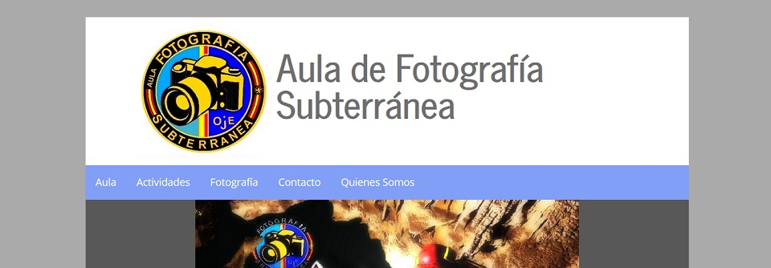

Aula de Fotografía Subterránea
Aula de Fofografía Subterranea (Underground Photography School) is a website that I developed as a part of my freelance work in Spain. The aim of this website was to provide a group of speleologists an online platform to write articles and show their photos. Basically, they wanted a blog with a couple of static sections explaining what they do and who they are. Also they wanted a section contact to allow user to get in contact with them.
Now I know that WordPress would be the better solution to face this project, but in that moment I was not confident enough with it, so I developed my own CMS. Develop a content system management by myself provided me with a good background of PHP and MySQL, which has been very useful through my career. However, due to the amount of lines of code that I have to write, the development of this site was highly increased.
As a freelance work, I was in charge of everything, from the very first desing to the final deployment. I develop both the front side and the admin side from scratch taking a mobile first approach. The admin site include the posibility to publish post, delete them, add new administrators, etc. It also have a record which shows the las 40 operations sorted by time.
This project was so big and I spent so many time working in it that, when I finished it, my way to write code and face problems during the development was totally different that before. I really grew up as a developer working on this project, and that's something I'm very happy with.